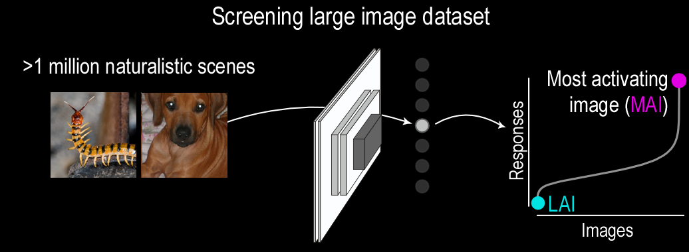
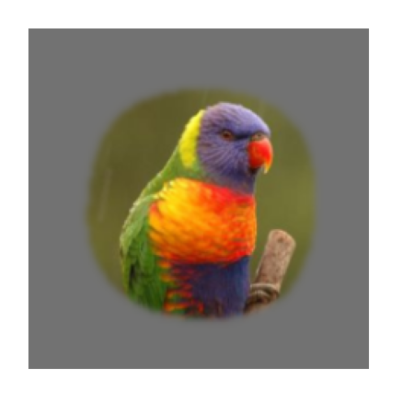
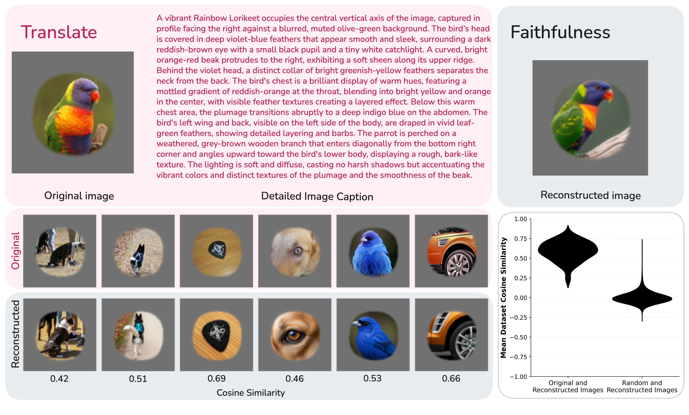
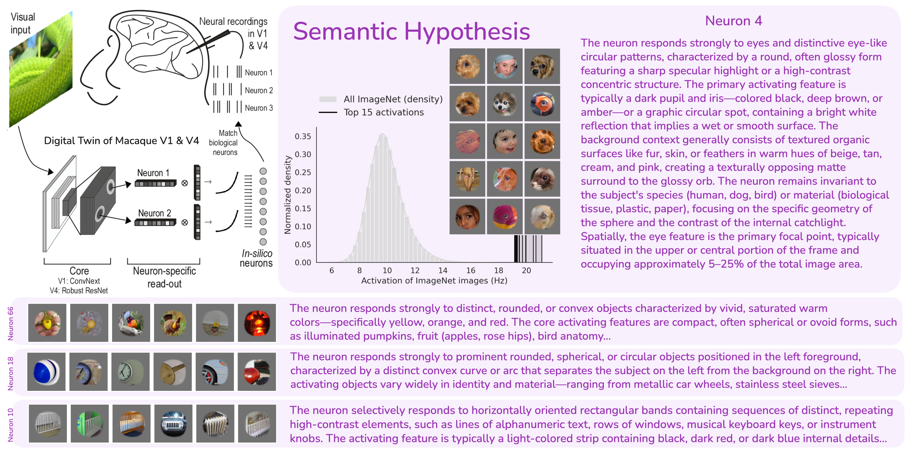
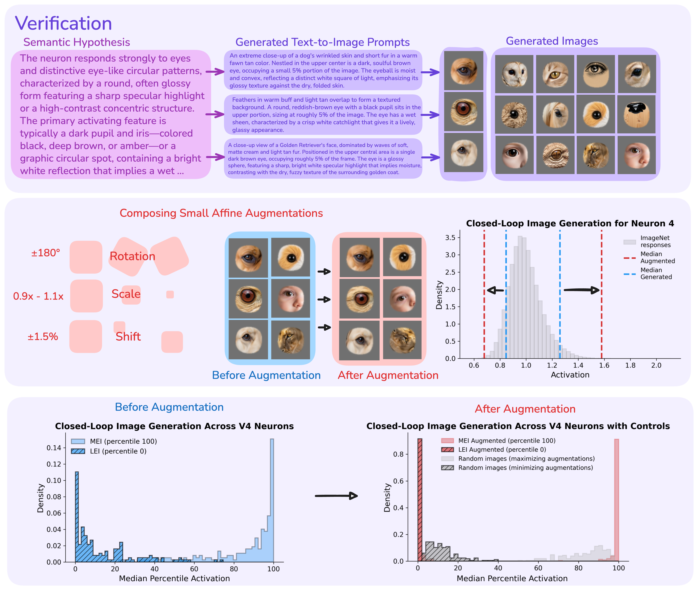
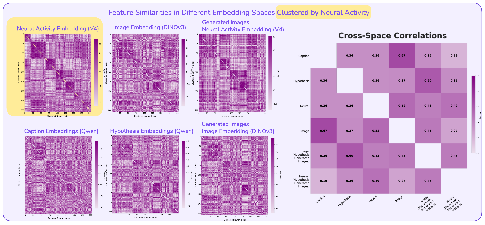
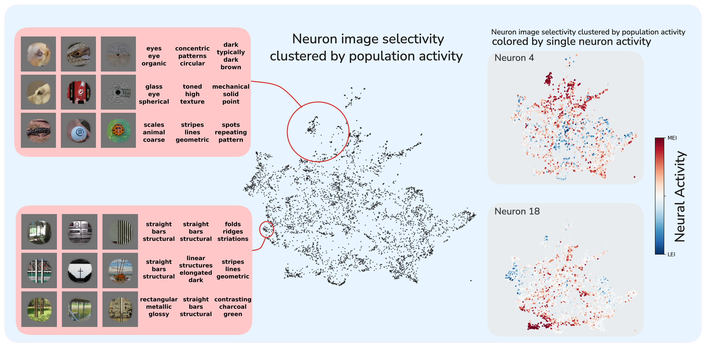

Framework overview. The pipeline translates neural selectivity into semantic hypotheses and validates them through generative testing. Each stage is automated and scalable to hundreds of neurons.
Stanford University · 2026
A closed-loop framework that translates the selectivity of individual visual neurons into interpretable semantic descriptions using vision–language models, digital twins, and generative image synthesis.
Stanford University · University of Tübingen · MIT †Equal senior contribution
Foundation
We leverage deep learning models trained on single-neuron spiking data from macaque V4 to build functional digital twins—in-silico surrogates that predict how each biological neuron responds to arbitrary images. These models enable screening millions of stimuli to identify each neuron's most and least activating images.

Digital twins and large-scale screening. Left: A shared CNN core with neuron-specific readouts creates in-silico neurons matched to biological recordings. Right: Over 1 million naturalistic images are screened to identify the most activating (MAI) and least activating (LAI) stimuli for every neuron.
Explore
Scrubbing across a neuron's activation range reveals that responses aren't simply binary. Both the most activating and most suppressing images depict distinct, coherent visual features—revealing a rich representational structure that a language-based framework can capture.
Method
Our framework proceeds in three stages: translate images to text, synthesize semantic hypotheses from extreme-response captions, and verify hypotheses through generative image synthesis.
01
Each image is converted into a dense textual description using Gemini 3.0 Pro, preserving fine-grained visual detail sufficient to reconstruct the original stimulus.
02
Captions of each neuron's most and least activating images are distilled into a concise semantic hypothesis describing excitatory and suppressive selectivity.
03
Hypotheses are converted into novel images via text-to-image generation. If generated images drive the neuron as predicted, the hypothesis is validated in closed loop.
Framework overview. The pipeline translates neural selectivity into semantic hypotheses and validates them through generative testing. Each stage is automated and scalable to hundreds of neurons.
Stage 1
The foundation of our approach is dense captioning—converting each image into an exhaustive textual description that preserves the visual information needed for neural interpretation. Unlike standard captioning, we prioritize visual fidelity over semantic summarization.


Caption faithfulness. A round-trip reconstruction test confirms that dense captions preserve visually relevant information. Images synthesized from captions are consistently more similar to their originals than to unrelated images in DINO embedding space.
Stage 2
For each V4 neuron, the digital twin screens over one million images. Captions of the top and bottom activating images are synthesized into a concise semantic hypothesis—capturing conjunctions of form, color, and texture that drive or suppress the neuron, without any injected domain knowledge.

V4 semantic hypotheses. For each neuron, top-activating images are identified via the digital twin and their captions distilled into interpretable selectivity descriptions. Examples show diverse feature conjunctions including eye-like structures, curved edges, and textured surfaces.
Stage 3
Semantic hypotheses are converted into novel images via text-to-image generation, then tested against the digital twin. Combined with spatial optimization, hypothesis-generated images drove 96.1% of V4 neurons above the 95th percentile of natural image responses.
| Condition | Threshold | n | Semantic (%) | Null (%) |
|---|---|---|---|---|
| Excitatory (MEI) | >90th | 205 | 99.5 | 33.2 |
| >95th | 205 | 96.1 | 8.8 | |
| >99th | 205 | 84.4 | 0.0 | |
| Suppressive (LEI) | <10th | 166 | 99.4 | 45.2 |
| <5th | 166 | 97.6 | 13.3 | |
| <1st | 166 | 78.9 | 0.0 |

V4 verification. Hypothesis-generated images resemble original most-activating stimuli and, after spatial optimization, drive neurons to extreme response percentiles. Control analysis with random images confirms that semantic content—not spatial search alone—is necessary.
Cross-modal alignment
Representational similarity analysis across six embedding spaces reveals that neural activity, visual features, and language share a common geometric structure. Neural responses to hypothesis-generated images align with original neural activity at r = 0.52, demonstrating that the full translate–hypothesize–generate loop preserves neurally relevant selectivity structure.

Cross-modal alignment. RSMs across six embedding spaces show consistent block structure. Image–caption alignment is strongest (r = 0.66), and the full closed-loop preserves selectivity structure (r = 0.52 between original and generated-image neural responses).
Population structure
Projecting V4 neurons via UMAP using population activity similarity and annotating each with keywords from its semantic hypothesis reveals smooth semantic transitions. Language does not merely label neural selectivity but preserves its organization.

Semantic structure. Left: UMAP embedding annotated with nouns and adjectives from each neuron's hypothesis. Right: Individual neurons tile localized, semantically coherent regions with smoothly varying activation.
Reference
If you find this work useful, please cite:
@article{lad2026letting,
title = {Letting the neural code speak: Automated
characterization of monkey visual neurons
through human language},
author = {Lad, Vedang and Franke, Katrin and
Rott Shaham, Tamar and Ganguli, Surya and
Tolias, Andreas and Sanborn, Sophia and
Karantzas, Nikos},
journal = {arXiv preprint},
year = {2026}
}